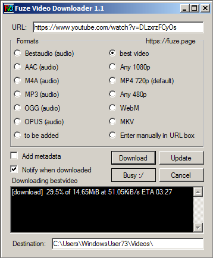

Overview
FuzeVD is a GUI application preinstalled with youtube-dl and FFMPEG to bring easy formatted downloads across many sites, primarily youtube.
Youtube-dl: https://yt-dl.org/
FFMPEG: https://ffmpeg.org/
Download
Version 1.1 - windows installer (24.8MB)
fuzevd-installer.msi
Version 1.1 - ZIP package (23.7MB)
Release.zip
Version 1.1 - 7z package (19.1MB)
Release.7z
Version 1.1 - Minimal windows installer (722KB)
setup.exe
For a minimal install, remember to copy youtube-dl.exe and ffmpeg.exe into the FuzeVD folder.
This is located in C:/Program Files (x86)/FuzeVD/ by default.
Showcase
Downloading a secret video ...(image)
